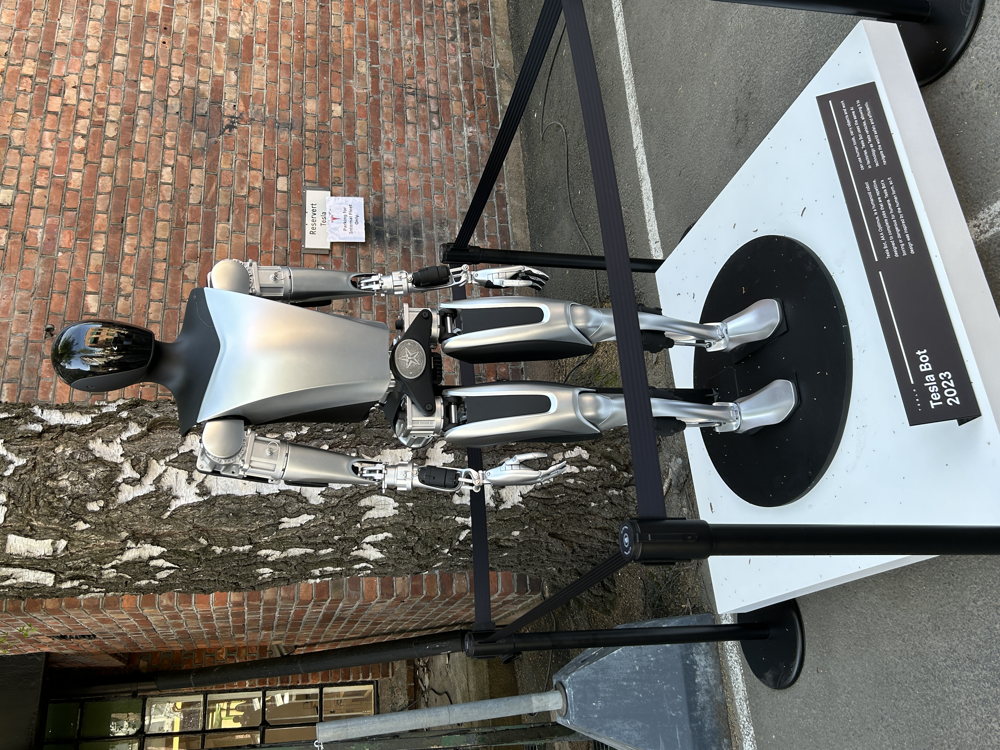

Created by Jayden Joseph
💡 Tip: Use the buttons to cycle through the interactive infographic before scrolling down.

As the AI "coming wave" accelerates, investment in artificial intelligence has increased dramatically. This chart shows the rapid growth in global corporate deals involving privately held AI companies, including private investments, mergers and acquisitions, public offerings, and minority stakes. The sharp rise in investment illustrates the growing amount of financial resources flowing into the AI industry as demand for increasingly powerful computing systems continues to expand.